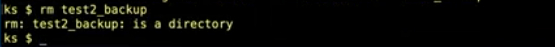

deleting files in unix is Not the same as trash, it permanently deletes them
us the rm command, (which stands for "remove), to delete files from the terminal window
the rm command alone will not delete a directory
just like cp, we must use the -R option to delete a directory